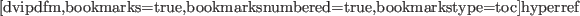

デモプログラムは、サブディレクトリdemoの中にある。
*eusdir*へcdした後、eusx上で実行できる。
- ロボットアニメーション
-
eusxよりdemo/animdemo.lをロードする。
約20分の計算の後、ETA3マニピュレータの滑らかなアニメーションが表示される。
(図1)
- レートレーシング
-
もし、8ビットの疑似カラーディスプレイを持っているなら、
demo/renderdemo.lをロードしてレイトレーシング画像を楽しむことができる。
geo/render.lが先にコンパイルされていることが必要。
- エッジ抽出
- demo/edgedemo.lをロードすると、サンプル単色画像が表示される。
微分オペレータとしきい値を選ぶためのパラメータを入力する。
エッジが数秒のうちに探され、元の画像に上書きされる。
Figure:
衝突回避経路計画のアニメーション
|  |
2015-07-31